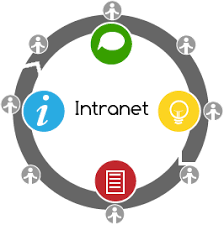

An Intranet is a private, internal network that belongs to an organisation. It uses the same technology as the Internet (such as TCP/IP and HTTP) but is accessible only to authorised members — typically employees of that organisation. It is not accessible to the general public.
Purpose of an Intranet
Organisations use intranets to improve internal communication and collaboration. Common uses include:
Sharing company news, policies, and announcements.
Storing and accessing internal documents and resources.
Managing employee directories and contact information.
Hosting internal tools such as HR portals, calendars, and project management systems.
Enabling communication through internal email and messaging.
Intranet vs Internet
Internet: A global public network accessible to anyone.
Intranet: A private network restricted to a specific organisation's members.
Advantages of an Intranet
Improved internal communication and information sharing.
Enhanced security — sensitive data stays within the organisation.
Reduces paperwork and supports a more efficient workflow.
Can be customised to meet the specific needs of the organisation.
Disadvantages of an Intranet
Expensive to set up and maintain.
Requires ongoing IT support and security management.
Only accessible within the organisation (unless a VPN is used).
Illustration

Figure: An intranet is a private internal network used within an organisation.